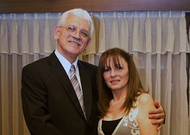
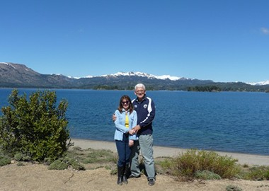

Somos David y Mónica Scharff. Vivimos en Argentina. El Señor nos ha regalado tres hijos - actualmente casados - y dos hermosas nietas. Ambos conocimos de Cristo en nuestra adolescencia. El Señor tenía preparado todo el camino, para que un 27 marzo de 1980 decidiéramos caminar juntos, tomados de la mano de Dios. Hoy, a punto de cumplir 35 años de casados, podemos decir: Dios ha sido fiel y su misericordia nos ha alcanzado!
Hace unos 10 años atrás el Señor tenía preparado el tiempo justo para que conociéramos VNPEM: el Ministerio llegó a nuestro hogar, a través del Canal Enlace. En aquellos años estábamos pasando por situaciones muy difíciles, como pareja, en nuestro rol de padres y situaciones de salud: necesitábamos realmente que el Señor nos hablara sobre algunos ajustes que teníamos que hacer como hijos de Dios.

Aquel entonces, en ENLACE, VNPEM tenía varios programas en la semana; lo veíamos los días martes, jueves y domingos. La exposición de la Palabra de Dios, a través de los mensajes del Dr. Armando Alducin, tan frontales, netamente bíblicos, hablando desde su experiencia de vida, fue lo que impactó nuestra mente y corazón.
Fue el comienzo de una renovación espiritual para nuestras vidas! VNPEM fue la plataforma que Dios usó para restaurarnos, aumentar nuestro conocimiento, renovar nuestro compromiso con el Señor y nos movilizara a “enderezar nuestros caminos y levantarnos de nuestras rodillas paralizadas” y así traspasar las puertas de la Congregación a la que asistíamos – y asistimos- para salir a la mies a proclamar las buenas de salvación.
Aprendimos que es mejor dar, que recibir. Que somos siervos de Jesucristo, administradores de lo tenemos y que teníamos que trabajar para parecernos cada día más a nuestro Señor y Salvador Jesús. Desde estonces, nuestro anhelo es servirle con fidelidad, pasión y verdadero amor. El Señor ha sido bueno, porque nos ha permitido trabajar como colaboradores a la par de muchos Misioneros en Argentina, Chile e Israel.
Por la gracia de Dios y para su gloria, podemos decir que desde hace ocho años recorremos la Argentina, visitando las provincias de: Chubut, Río Negro, Neuquén, Santa Cruz y Tierra del Fuego (Sur) – Formosa, Salta y Chaco (Norte) – Córdoba y Santiago del Estero (Centro). Nuestra misión es asistir a los hermanos que visitamos, con apoyo espiritual y soporte evangelístico, con aportes de: ropas, medicamentos, alimentos no pereceros, etc. Acompañan nuestro ministerio misionero, el material de VNPEM (Libros, Cd y DVD).
Queridos hermanos, aprovechamos la oportunidad para agradecerles por vuestro apoyo en oración a favor de nuestras vidas. Ustedes son nuestras redes de contención, que el Señor ha colocado para que respalden la tarea misionera, en el lugar que Él nos llame a servirle.
Les saludamos desde Argentina, con profundo amor en Cristo, quedando a vuestra disposición para lo que pudieran necesitar. El Señor les bendice!
“Solamente temed a Jehová y servirle de verdad con todo vuestro corazón”
1 Samuel 12:24
David y Mónica Scharff
Embajadores en Argentina de Vida Nueva Para El Mundo A.R.
Escríbenos a la siguiente dirección de correo:
vnpmargentina@gmail.com